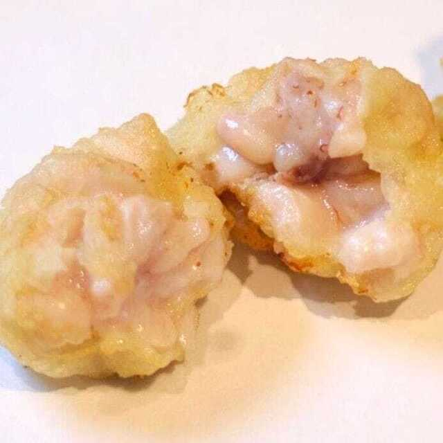
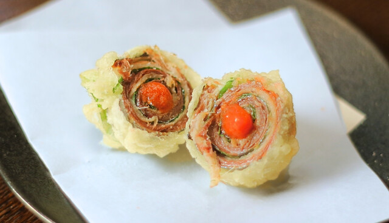
选用肥美的秋刀鱼，用紫苏叶包裹后炸制，搭配清爽的梅肉。请直接品尝！与[白]甲州葡萄酒非常搭配！

秋季经典。香气浓郁的舞茸炸至酥脆，无论蘸盐还是天妇罗酱都美味可口！与[红]黑皮诺葡萄酒非常搭配！
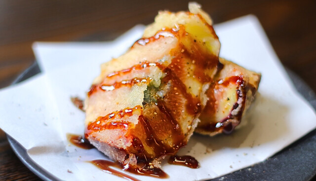
炸过的无花果更添甜味，搭配融化的戈尔根朱勒奶酪，佐以香醋酱。请直接品尝！与[红]麝香贝利A葡萄酒非常搭配！
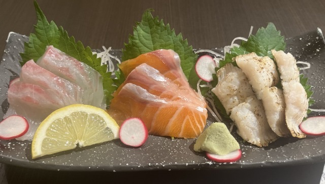
奢华拼盘，尽享三种新鲜鱼类。[白]甲州葡萄酒搭配更佳！
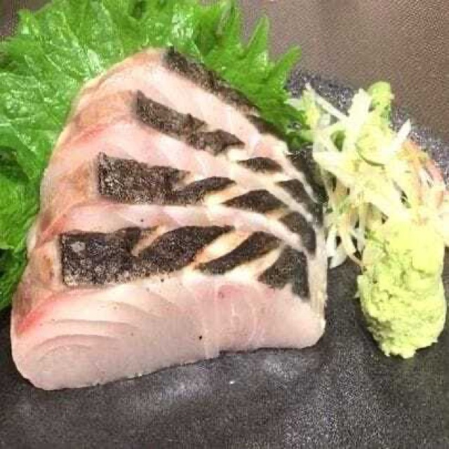

将脂香丰富的归来鲣鱼炙烤至香气四溢。请搭配丰富的佐料享用！与[白]甲州葡萄酒非常搭配！
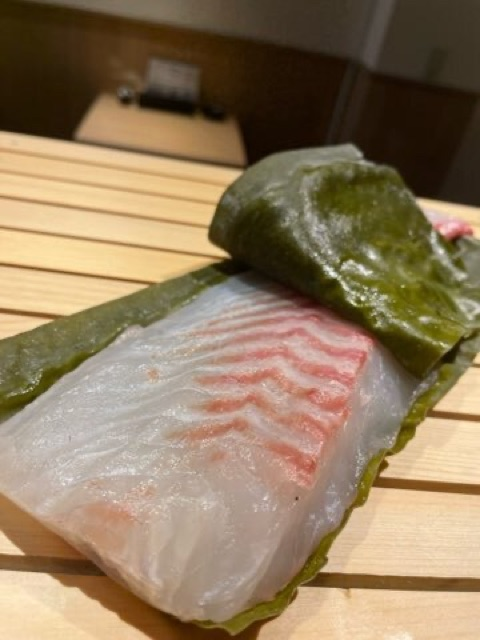
鲷鱼的细腻甜味融合昆布的鲜美。请先品尝原味！[白]甲州葡萄酒搭配更佳！
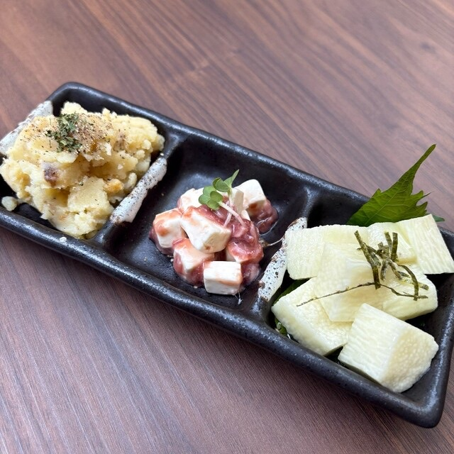
多样前菜小碟拼盘，适合搭配您喜欢的酒品！
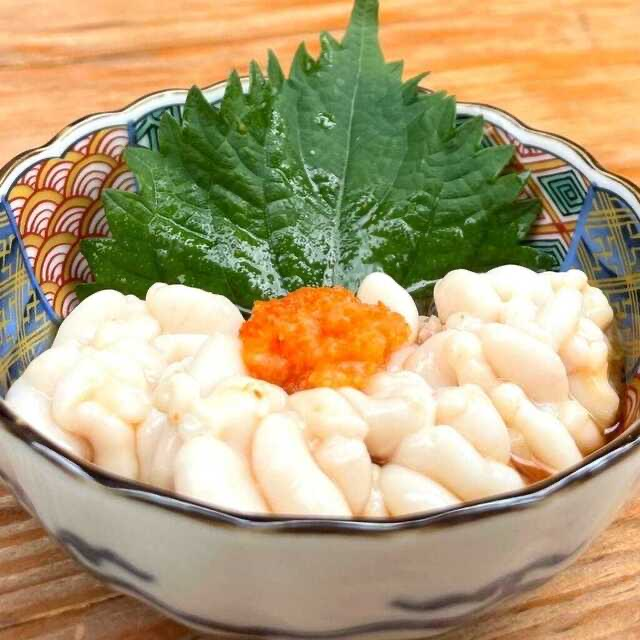
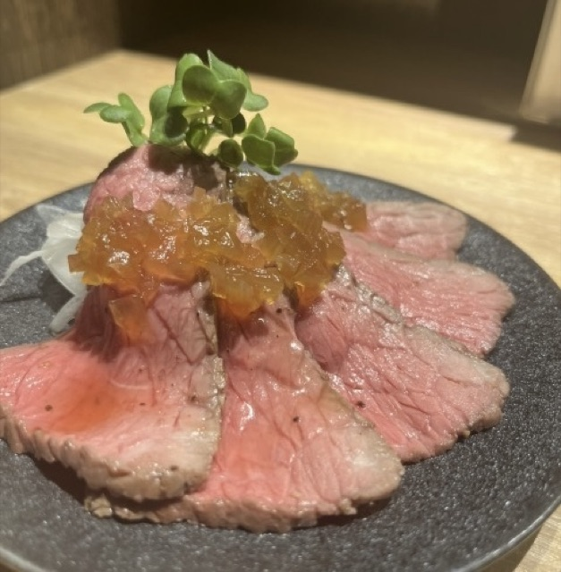
自信推荐的烤牛肉，尽享肉香与美味。与[红]黑皮诺葡萄酒非常搭配！
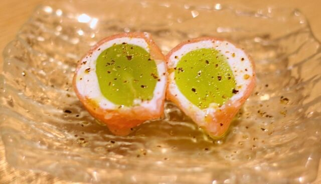
麝香葡萄的甜味、生火腿的咸香与芝士的浓郁完美融合。与起泡酒非常搭配！
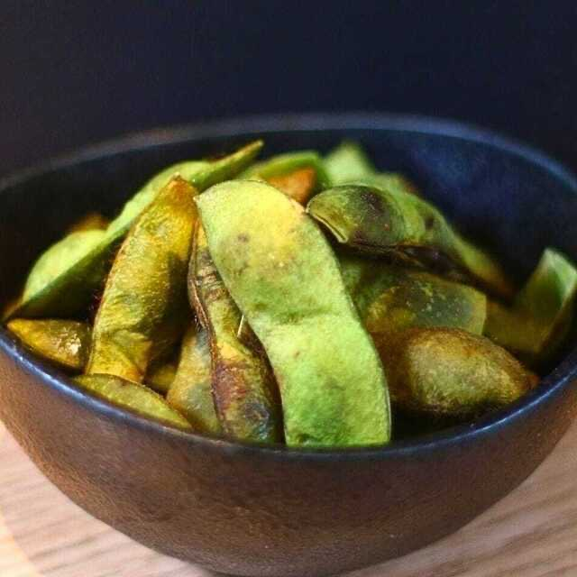
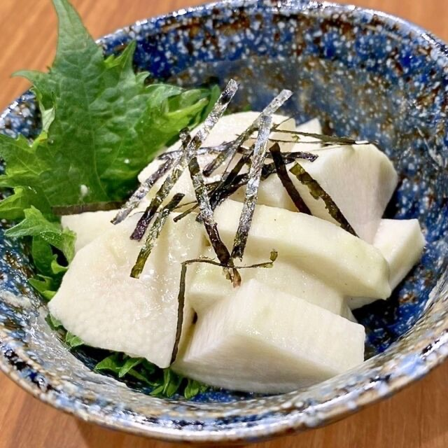
爽脆的山药配以芥末的独特香气，是天妇罗间隙的理想小菜！

自制土豆沙拉，口感细腻，带有温和的甜味。无论是佐餐还是小食都很合适！
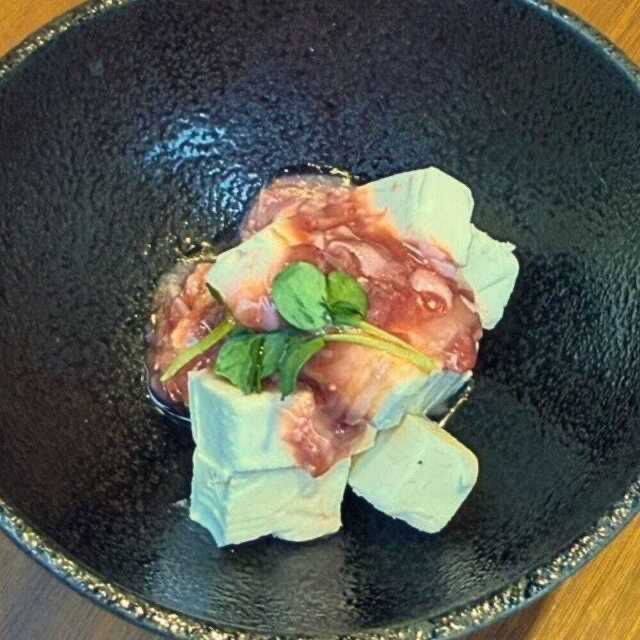
酒盗的浓郁鲜味与奶油奶酪的柔和口感完美融合。欢迎搭配您喜欢的酒品！

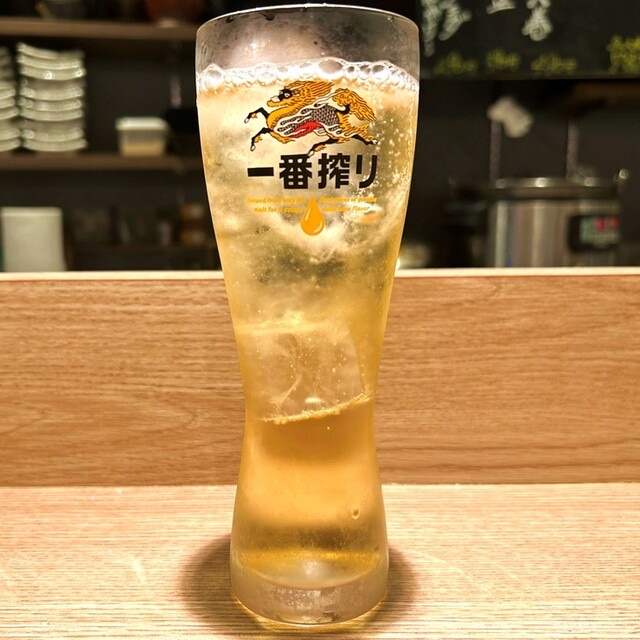
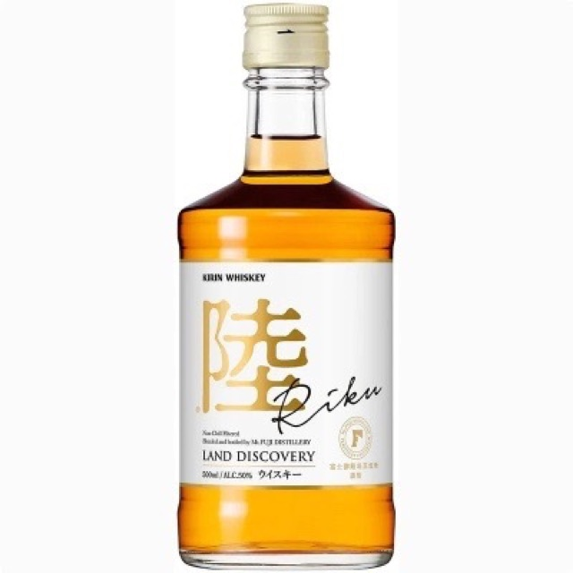
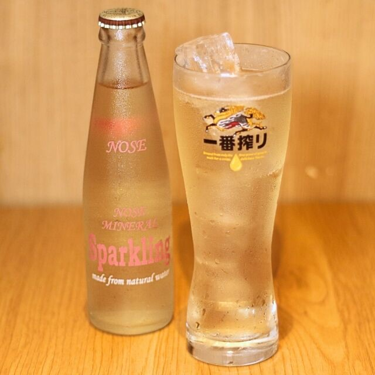

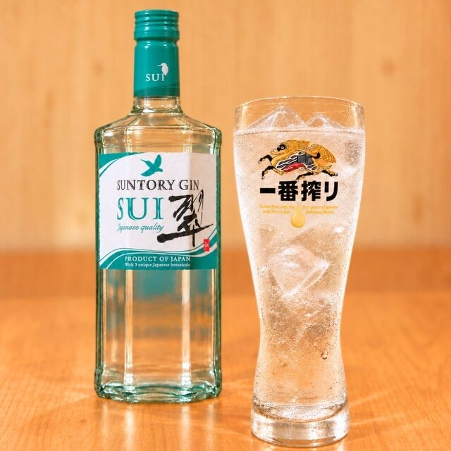

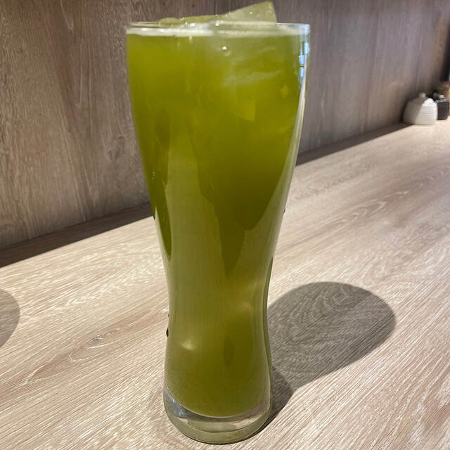
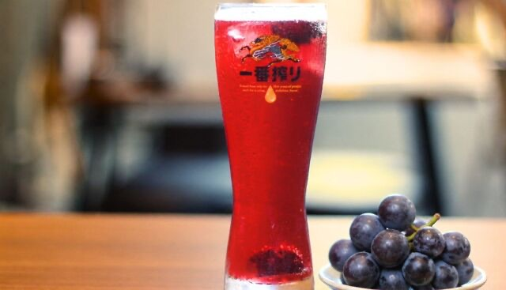
精选巨峰葡萄，果肉丰富。
秋季限定的果肉沙瓦！

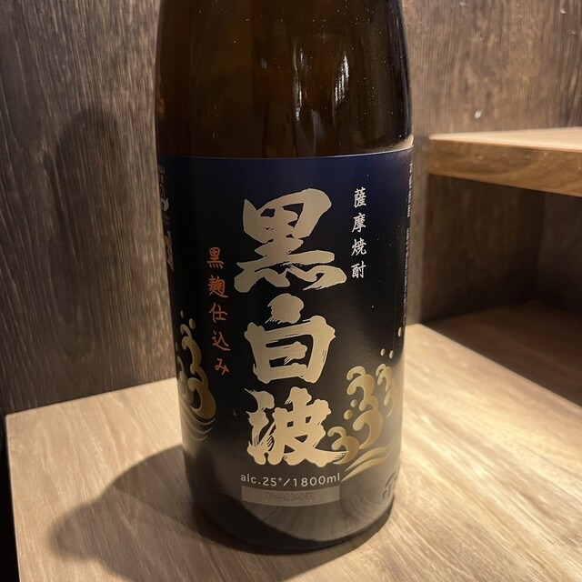

满满的巨峰葡萄，尽享奢华。
秋季限定，果肉丰富的苏打饮！
草莓与樱桃香气，口感轻盈柔和的智利红葡萄酒。
◎推荐搭配：鸭肉、鸡天妇罗、茄子～帕尔玛火腿～

黑加仑浓郁香气与深厚口感，法国红葡萄酒。
◎推荐搭配：红薯、香菇～肉味噌～
野草莓的清香与莓果的果味轻柔交融的桃红葡萄酒（日本）。
◎推荐搭配：炸星鳗天妇罗
草莓与樱桃香气，口感轻盈柔和的智利红葡萄酒。
◎推荐搭配：鸭肉、鸡天妇罗、茄子～帕尔玛火腿～
黑加仑浓郁香气与深厚口感，法国红葡萄酒。
◎推荐搭配：红薯、香菇～肉味噌～